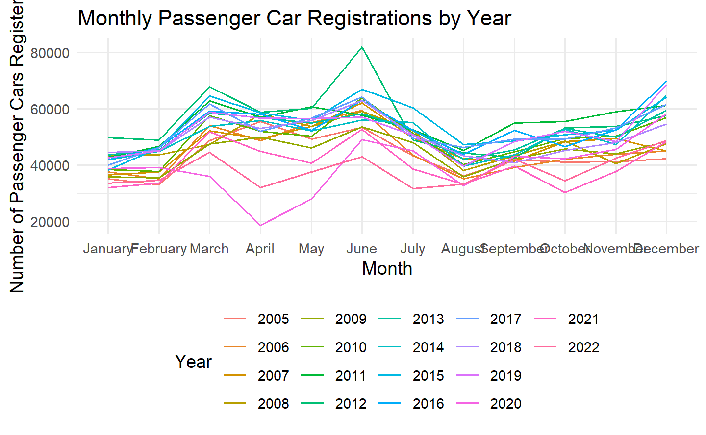
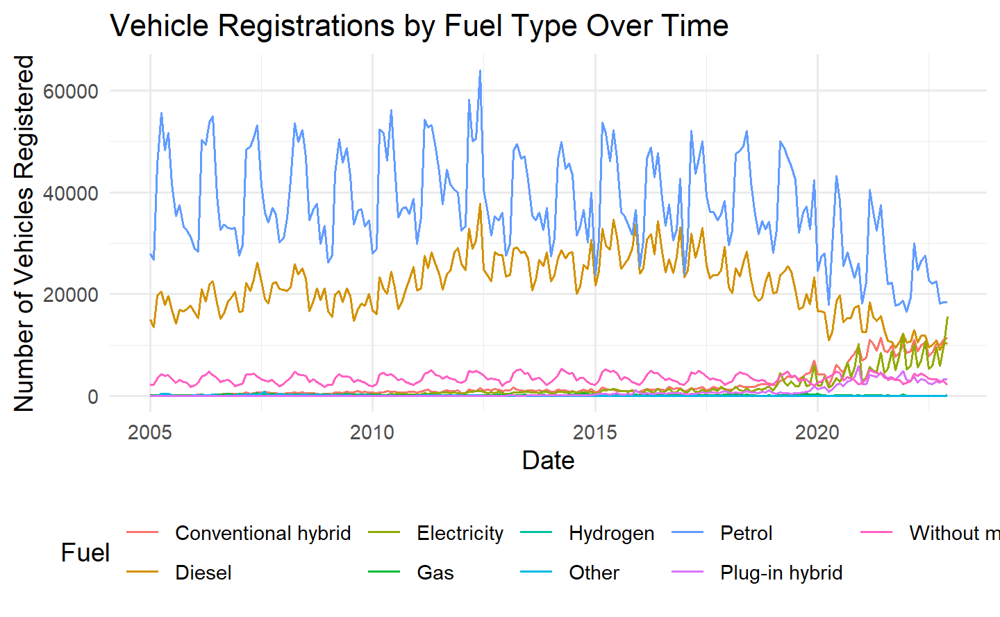
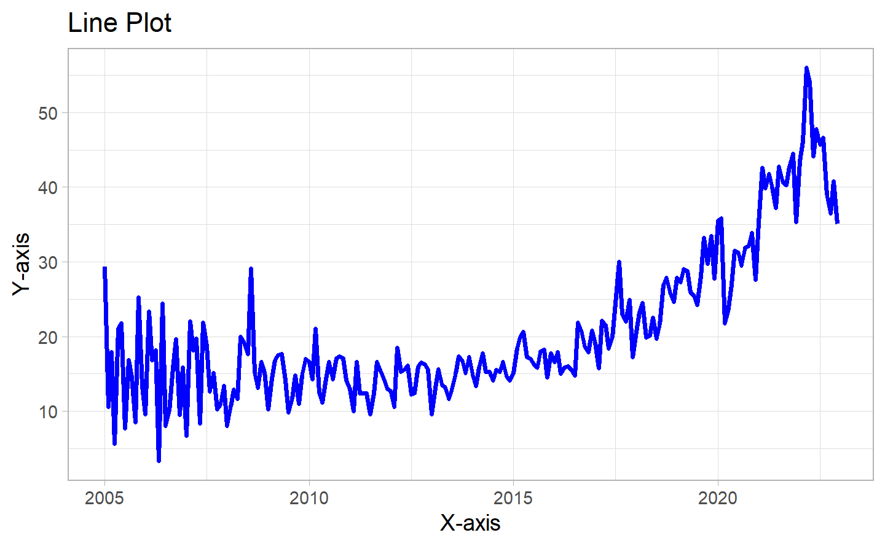

Energizing Change: Electric Vehicle Rise in Switzerland
Author
Pierre Gasly, Alexis Jeannaret, Hugo, Urs Hurni
Published
November 13, 2023
1 Introduction
TO DO’s
Overview and Motivation - ✓
Related Work - TBD
Research questions - ✓
1.1 Background and Motivation
In an era marked by unprecedented environmental challenges, our world is at a critical juncture where sustainable practices are no longer an option but a necessity. Climate change, driven by anthropogenic activities, poses an imminent threat to the delicate ecological balance. Recognizing the urgency of this global issue, we are compelled to investigate the specific context of Switzerland, the country we live in, and which has a lot of financial capacities to change rapidly.
The automotive sector plays a pivotal role in shaping the sustainability landscape, and our focus on electric vehicle adoption in Switzerland reflects a strategic choice to comprehend the intricate interplay of factors driving this transition.
The motivations underlying our research stem from a multifaceted perspective. Firstly, the automotive industry is undergoing a transformative shift globally, with electric vehicles emerging as a key solution to reduce carbon emissions. By narrowing our focus to Switzerland, we aim to provide nuanced insights into the factors influencing EV adoption, offering a unique perspective on the socio-economic, environmentally stable and financially comfortable Swiss context. The adoption of electric vehicles provides an insight into people’s inclination to make efforts towards sustainability. This emphasizes the crucial role that electric vehicle adoption plays in gauging society’s commitment to sustainable practices.
Secondly, our commitment to environmental sustainability extends beyond a generic interest. The urgency of addressing climate change has never been more palpable, and our research seeks to contribute substantively to the discourse on sustainable mobility.
Moreover, we believe the future is encapsulated in our dedication to understanding the dynamics of environmentally conscious consumer behavior. By unraveling the complexities of EV adoption in Switzerland over the years (2005-2022), we aim to offer valuable insights that could guide policymakers, businesses, and consumers towards more informed and sustainable choices.
In essence, our research is not merely an academic exercise; it is a proactive response to the pressing challenges of our time. We believe that by comprehensively analyzing the impact of external factors on the adoption of electric vehicles in Switzerland, we can contribute meaningfully to the ongoing global efforts towards a more sustainable and resilient future. Through this research, we aspire to inspire positive change, foster innovation, and advocate for a paradigm shift towards eco-friendly practices in the automotive sector and beyond.
Which gave us further incetive to dive deeper into the topic.
1.3 Reseach Questions
How does the rise in environmental consciousness, as depicted by Google Trends, correlate with electric vehicle adoption in Switzerland across different regions and over time, especially in relation to oil price fluctuations and demographic changes?
Given fluctuations in oil prices, demographic shifts, and major policy or automotive industry trends, which of these factors have a direct causal impact on the shifts in the adoption of electric vehicles in Switzerland?
Based on past electric vehicle adoption trends in Switzerland, can we forecast future adoption rates and pinpoint times of significant increases or decreases correlated with major events or policy changes?
In comparing regions in Switzerland, which areas show higher or lower adoption of electric vehicles, and how does this regional adoption align or vary with external factors like oil price changes, environmental consciousness, and demographic shifts?
To what extent have policy alterations, global environmental incidents, and shifts in the automotive industry affected electric vehicle adoption in Switzerland?
2 Data
TO DO’s
Wrangling/cleaning
Sources - TBS
Description - In progress
Wrangling/cleaning - In progress
Spotting mistakes and missing data (could be part of EDA too) - TBD
Listing anomalies and outliers (could be part of EDA too) - TBD
2.1 Raw Datasets
The datasets encompass:
Vehicle Registrations: Detailed regional breakdowns showing vehicle type, fuel type, and numbers across years.
Google Trends: Time-series data showcasing the interest in electric vehicles and environmental topics over time.
Oil Prices: Time-series data indicating Brent oil price fluctuations over the years.
Demographics: Indicators like population growth, immigration, emigration, gender statistics, and more, which can influence vehicle adoption patterns.
For this part of the project, we decided to present the different datasets in a table form and to do that, we used the function kablefrom the package kableExtra. This gives us a table with each variable and its definition. a modifier c’est du copy paste !!!!!!
2.1.1 Swiss Vehicle Registration Dataset
Description New registrations of road vehicles by vehicle group and type Results by canton, vehicle group, vehicle type, fuel, month and year
Code
# Create a tibble with variable descriptionsvariable_table_vehicle <-tibble(Variables =c("Canton", "Vehicle group / type", "Fuel", "Month", "2009-2022"),Meaning =c("The region in Switzerland.","Type or group of the vehicle.","Type of fuel used by the vehicle.","The month of the data.","Number of vehicles for each respective year. Each with it's own column" ))# Display the table using kableExtravariable_table_vehicle %>%kbl() %>%kable_styling(position ="center")
Variables
Meaning
Canton
The region in Switzerland.
Vehicle group / type
Type or group of the vehicle.
Fuel
Type of fuel used by the vehicle.
Month
The month of the data.
2009-2022
Number of vehicles for each respective year. Each with it's own column
# Create a tibble with variable descriptionsvariable_table <-tibble(Variables =c("Date", "Price"),Meaning =c("The date when the price was recorded. In a day-month-year format.","The price of Brent Oil on the given date." ))# Display the table using kableExtravariable_table %>%kbl() %>%kable_styling(position ="center")
Variables
Meaning
Date
The date when the price was recorded. In a day-month-year format.
Price
The price of Brent Oil on the given date.
source
2.1.3 Swiss Demographics Dataset
description
Code
# Create a tibble with variable descriptionsvariable_table <-tibble(Variables =c("Year", "Citizenship (category)", "Sex", "Age", "Population on 1 January", "Live birth", "Death", "Natural change", "Immigration incl. change of population type", "Emigration", "Net migration incl. change of population type", "Change of population type", "Acquisition of Swiss citizenship", "Gender change in the civil register (entry)", "Gender change in the civil register (exit)", "Statistical adjustment", "Population on 31 December", "Population change" ),Meaning =c("The year of the demographic data.","The categorization of the citizenship status.","Gender category.","Age category.","Population count at the beginning of the year.","Number of births in the year.","Number of deaths in the year.","Change in the population due to births and deaths.","Number of immigrants, including change of population type.","Number of emigrations.","Net migration count, including change of population type.","Change in the categorization of the population.","Number of individuals who acquired Swiss citizenship.","Number of gender changes registered (entry).","Number of gender changes registered (exit).","Adjustments made to the data for accuracy.","Population count at the end of the year.","Change in population over the year." ))# Display the table using kableExtravariable_table %>%kbl() %>%kable_styling(position ="center")
Variables
Meaning
Year
The year of the demographic data.
Citizenship (category)
The categorization of the citizenship status.
Sex
Gender category.
Age
Age category.
Population on 1 January
Population count at the beginning of the year.
Live birth
Number of births in the year.
Death
Number of deaths in the year.
Natural change
Change in the population due to births and deaths.
Immigration incl. change of population type
Number of immigrants, including change of population type.
Emigration
Number of emigrations.
Net migration incl. change of population type
Net migration count, including change of population type.
Change of population type
Change in the categorization of the population.
Acquisition of Swiss citizenship
Number of individuals who acquired Swiss citizenship.
Gender change in the civil register (entry)
Number of gender changes registered (entry).
Gender change in the civil register (exit)
Number of gender changes registered (exit).
Statistical adjustment
Adjustments made to the data for accuracy.
Population on 31 December
Population count at the end of the year.
Population change
Change in population over the year.
source
2.1.4 Google trend data
Code
# Create a tibble with variable descriptionsvariable_table_google_trend <-tibble(Variables =c("Month", "Search Term: Voiture électrique", "Search Term: Véhicule électrique", "Search Term: EV", "Search Term: Electric Car", "Search Term: Elektromobil", "Search Term: Elektrofahrzeug", "Search Term: Elektro Auto", "Search Term: Auto Elettrica"),Meaning =c("The month of the data","Google Trends data for 'Voiture électrique: (Suisse)'","Google Trends data for 'Véhicule électrique: (Suisse)'","Google Trends data for 'EV: (Suisse)'","Google Trends data for 'Electric car: (Suisse)'","Google Trends data for 'Elektromobil: (Suisse)'","Google Trends data for 'Elektrofahrzeug: (Suisse)'","Google Trends data for 'Elektro Auto: (Suisse)'","Google Trends data for 'Auto Elettrica: (Suisse)'" ))# Display the table using kableExtravariable_table_google_trend %>%kbl() %>%kable_styling(position ="center")
Variables
Meaning
Month
The month of the data
Search Term: Voiture électrique
Google Trends data for 'Voiture électrique: (Suisse)'
Search Term: Véhicule électrique
Google Trends data for 'Véhicule électrique: (Suisse)'
Search Term: EV
Google Trends data for 'EV: (Suisse)'
Search Term: Electric Car
Google Trends data for 'Electric car: (Suisse)'
Search Term: Elektromobil
Google Trends data for 'Elektromobil: (Suisse)'
Search Term: Elektrofahrzeug
Google Trends data for 'Elektrofahrzeug: (Suisse)'
Search Term: Elektro Auto
Google Trends data for 'Elektro Auto: (Suisse)'
Search Term: Auto Elettrica
Google Trends data for 'Auto Elettrica: (Suisse)'
description
source
2.1.5 French vehicle registration data
description ::: {.cell layout-align=“center”}
:::
source
2.2 Data Wrangling
2.2.1 Data Wrangling : Oil clean
Code
# Change date column into Day# Two types of format: one format before 22.04.2020,a different format after# 22.04.2020 is on row 8361# Format 1: 15-Apr-2020oil_df_1 <- oil_prices_data[0:8360,] |>separate(Date, into =c("Day", "Month", "Year"), sep ="-")# Format 2 : Apr 22, 2020oil_df_2 <- oil_prices_data[8361:nrow(oil_prices_data),] |>separate(Date, into =c("Month", "Day", "Year"), sep =" |, ")# Check for NAsprint(which(rowSums(is.na(oil_df_1)) >0))#> named integer(0)print(which(rowSums(is.na(oil_df_2)) >0))#> named integer(0)# We don't need dates before 2005oil_df_1 <- oil_df_1[4486:nrow(oil_df_1),]# Years in same format for bothoil_df_1$Year <-paste0("20", oil_df_1$Year)# Change the order of both dataframesoil_df_1 <- oil_df_1 %>%select("Year", "Month", "Day", "Price")oil_df_2 <- oil_df_2 %>%select("Year", "Month", "Day", "Price")# Merging both dataframes togetheroil_df <-rbind(oil_df_1, oil_df_2)# We want all our data to have the same date format #YYYY-MM-DD# First we create a df to change the current month format to numbersmonths_numbers <-data.frame(current_month_format =c("Jan", "Feb", "Mar", "Apr", "May", "Jun", "Jul", "Aug", "Sep", "Oct", "Nov", "Dec"),numbers =1:12)# Then we update our oil_dataoil_df <- oil_df %>%left_join(months_numbers, by =c("Month"="current_month_format")) %>%select(Year, numbers, Day, Price) %>%rename(Months = numbers)# Regroup the date in 1 columnoil_df <- oil_df %>%mutate(Date =as.Date(paste(Year, Months, Day, sep ="-"))) %>%select(Date, Price)# Displayed clean datahead(oil_df)#> Date Price#> 1 2005-01-05 41.0#> 2 2005-01-06 43.2#> 3 2005-01-07 43.3#> 4 2005-01-10 44.7#> 5 2005-01-11 43.5#> 6 2005-01-12 43.8
2.2.2 Data Wrangling : Google trend clean
Comprehending Google Trends information involves understanding the contextualization of the provided figures. The data is standardi
The crucial element for effective narration lies in utilizing the normalized Trends data. This normalization indicates that when observing search interest trends over time, it is interpreted as a ratio relative to all searches conducted on all topics on Google during that specific period and location. Likewise, when assessing regional search interest for a specific topic, it is construed as the search interest for that particular topic in a given region relative to all searches on all topics on Google in that same place and time.
dataset_names <-c("googletrends_auto-elettrica_2005-2022.csv","googletrends_elektro-auto_2005-2022.csv","googletrends_elektrofahrzeug_2005-2022.csv","googletrends_elektromobil_2005-2022.csv","googletrends_eletric-car_2005-2022.csv","googletrends_EV_2005-2022.csv","googletrends_vehicule-electrique_2005-2022.csv","googletrends_voiture-electrique_2005-2022.csv")# Function to process each datasetprocess_dataset <-function(file_path) {# Read the dataset google_trends_data <-read.csv(file_path)# Remove the dates from the index google_trends_data <- google_trends_data |>rownames_to_column(var ="Date")# Remove the first row using slice google_trends_data <-slice(google_trends_data, -1)# Check for NAcat("NA count for", file_path, ": ", sum(is.na(google_trends_data$Date)), "\n")cat("NA count for SearchCount in", file_path, ": ", sum(is.na(google_trends_data$Catégorie...Toutes.catégories)), "\n")# Rename colcolnames(google_trends_data)[2] <-"SearchCount"# Convert to numeric google_trends_data$SearchCount <-as.numeric(google_trends_data$SearchCount)# Convert the column to date with the desired format google_trends_data$Date <-as.Date(paste(google_trends_data$Date, "01", sep ="-"))return(google_trends_data)}# Process each dataset and store in a listprocessed_datasets <-list()for (dataset_name in dataset_names) { file_path <-file.path("../data", dataset_name) processed_dataset <-process_dataset(file_path) processed_datasets[[dataset_name]] <- processed_dataset}#> NA count for ../data/googletrends_auto-elettrica_2005-2022.csv : 0 #> NA count for SearchCount in ../data/googletrends_auto-elettrica_2005-2022.csv : 0 #> NA count for ../data/googletrends_elektro-auto_2005-2022.csv : 0 #> NA count for SearchCount in ../data/googletrends_elektro-auto_2005-2022.csv : 0 #> NA count for ../data/googletrends_elektrofahrzeug_2005-2022.csv : 0 #> NA count for SearchCount in ../data/googletrends_elektrofahrzeug_2005-2022.csv : 0 #> NA count for ../data/googletrends_elektromobil_2005-2022.csv : 0 #> NA count for SearchCount in ../data/googletrends_elektromobil_2005-2022.csv : 0 #> NA count for ../data/googletrends_eletric-car_2005-2022.csv : 0 #> NA count for SearchCount in ../data/googletrends_eletric-car_2005-2022.csv : 0 #> NA count for ../data/googletrends_EV_2005-2022.csv : 0 #> NA count for SearchCount in ../data/googletrends_EV_2005-2022.csv : 0 #> NA count for ../data/googletrends_vehicule-electrique_2005-2022.csv : 0 #> NA count for SearchCount in ../data/googletrends_vehicule-electrique_2005-2022.csv : 0 #> NA count for ../data/googletrends_voiture-electrique_2005-2022.csv : 0 #> NA count for SearchCount in ../data/googletrends_voiture-electrique_2005-2022.csv : 0# Merge datasets based on the "Date" columnmerged_data <-reduce(processed_datasets, left_join, by ="Date")# Sum the values for each search term for a given datedf_summed <- merged_data %>%rowwise() %>%mutate(Sum_SearchCount =sum(c_across(starts_with("SearchCount"))))# Normalize the Sum_SearchCount values between 1 and 100df_summed$SearchRatio <- df_summed$Sum_SearchCount /8# Print the resultdf_gtrends <- df_summed[,-(2:10)]df_gtrends#> # A tibble: 216 x 2#> # Rowwise: #> Date SearchRatio#> <date> <dbl>#> 1 2005-01-01 29.4 #> 2 2005-02-01 10.6 #> 3 2005-03-01 17.9 #> 4 2005-04-01 5.62#> 5 2005-05-01 21.1 #> 6 2005-06-01 21.8 #> 7 2005-07-01 7.75#> 8 2005-08-01 16.9 #> 9 2005-09-01 14.5 #> 10 2005-10-01 8.5 #> # i 206 more rows
2.2.3 Cleaning of demographic_data
This dataset regroups the demographic data in Switzerland since 1971. ::: {.cell layout-align=“center”}
Code
# We only keep the data from 2005-2022 (time frame of our analysis)demographic_data <- demographic_data[-c(1:31212),]# We do not differentiate Male-Female for the purpose of this analysis -> we only keep the "total" rowsfiltered_demographic <- demographic_data %>%filter(grepl("total",demographic_data$Sex))# We do not differentiate Swiss citizenship - Foreign citizenship for the purpose of this analysis -> we only keep the "total" rowsfiltered_demographic <- filtered_demographic %>%filter(grepl("total", filtered_demographic$Citizenship..category.))# People under 18 cannot drive -> We remove summary rows + people under 18 + people 99 and above (anecdotal observations)filtered_demographic <- filtered_demographic %>%filter(!grepl("total",filtered_demographic$Age),between(as.numeric(gsub(" years","",filtered_demographic$Age)), 18, 98) )#> Warning: There was 1 warning in `filter()`.#> i In argument: `between(...)`.#> Caused by warning in `between()`:#> ! NAs introduced by coercion# We keep the interesting columnsfiltered_demographic <- filtered_demographic %>%select(c("Year","Age","Population.on.1.January"))## To perform meaningful analyses on the data, we group the ages by generations# remove " years" from the age columnfiltered_demographic$Age <-as.numeric(gsub(" years", "",filtered_demographic$Age))# Create bins with the different generations:filtered_demographic$Generation <-cut(filtered_demographic$Age,breaks =c(17, 26, 42, 58, Inf),labels =c("Generation Z", "Millenials","Generation X", "Baby Boomers"),include.lowest =TRUE)# we format the table widerfiltered_demographic <- filtered_demographic %>%select(-"Age")filtered_demographic <- filtered_demographic %>%pivot_wider(names_from = Generation, values_from = Population.on.1.January, values_fn = sum)head(filtered_demographic)#> # A tibble: 6 x 5#> Year `Generation Z` Millenials `Generation X` `Baby Boomers`#> <int> <int> <int> <int> <int>#> 1 2005 788674 1783064 1693753 1764390#> 2 2006 797102 1762564 1722516 1800973#> 3 2007 803780 1743133 1754075 1839602#> 4 2008 819198 1743763 1790725 1876304#> 5 2009 835811 1754815 1832671 1914329#> 6 2010 848237 1755747 1871058 1948046
:::
2.2.4 Data Wrangling : Swiss vehicle clean
Redundancy
The dataset, representing new vehicle registrations in Switzerland from 2005 onwards, exhibited redundancy in its structure. For example, the data contained both main categories (like ‘> Passenger cars’) and their respective sub-categories (‘… Passenger car’ and ‘.. Heavy passenger car’). On examination, it was observed that the counts under the main categories were simply aggregates of the counts of their sub-categories. Such redundancy could lead to double counting in analytical processes.
Code
##### 1st data 2005 to 2008 clean ###### remove the main categories to avoid and to work with a more granular dataset.# Filter out main categories (rows starting with '>')v_2005_2008 <- vehicle_data_2005_2008 |>filter(!grepl("^>", trimws(Vehicle.group...type)))#rename the Vehicle.group...type column to VehicleType and clean the observations' namesv_2005_2008 <- v_2005_2008 |>rename(Location = Canton,VehicleType = Vehicle.group...type) |>mutate(VehicleType =str_remove(VehicleType, "^\\.\\.\\.\\s*"))# Year Extraction, Reshape the dataset from wide to long formatv_2005_2008 <- v_2005_2008 |>pivot_longer(cols =`X2005`:`X2008`, names_to ="Year", values_to ="Count")# Remove the "X" prefix from the Year columnv_2005_2008$Year <-gsub("X", "", v_2005_2008$Year)##### 2nd data 2009 to 2022 clean ###### Filter out main categories (rows starting with '>')v_2009_2022 <- vehicle_data_2009_2022 |>filter(!grepl("^>", trimws(Vehicle.group...type)))#rename the Vehicle.group...type column to VehicleType and clean the observations' namesv_2009_2022 <- v_2009_2022 |>rename(Location = Canton,VehicleType = Vehicle.group...type) |>mutate(VehicleType =str_remove(VehicleType, "^\\.\\.\\.\\s*"))# Year Extraction, Reshape the dataset from wide to long formatv_2009_2022 <- v_2009_2022 |>pivot_longer(cols =`X2009`:`X2022`, names_to ="Year", values_to ="Count")# Remove the "X" prefix from the Year columnv_2009_2022$Year <-gsub("X", "", v_2009_2022$Year)
Merging and Joining
As the vehicle data was split across multiple files, it was necessary to combine them for a holistic view.
Some of the canton names have special characters that haven’t been encoded properly in the dataset, causing them to display as hexadecimal escape sequences.
We consolidated the ‘Year’ and ‘Month’ columns into a singular ‘Date’ column, converting them into a standard date format. This transformation streamlines time series analyses and provides a more intuitive representation of the data’s temporal dimension. ::: {.cell layout-align=“center”}
Code
#### canton ####df_v$Location <-iconv(df_v$Location, from ="latin1", to ="UTF-8")# keep only the first name when multiple names are provided for cantons (separated by slashes)df_v$Location <-sapply(str_split(df_v$Location, " / "), `[`, 1)#### Year #####create date col# Convert month names to month numbersdf_v$MonthNum <-match(df_v$Month, month.name)# Combine Year, MonthNum, and "01" to create a date in the format "YYYY-MM-01"df_v$Date <-as.Date(paste(df_v$Year, df_v$MonthNum, "01", sep ="-"), format ="%Y-%m-%d")# Drop the Month, Year, and MonthNum columnsdf_v <- df_v %>%select(-Month, -Year, -MonthNum)#### renaming #####renaming the 4 different hybrid name to only twodf_v <- df_v |>mutate(Fuel =case_when( Fuel %in%c("Petrol-electricity: conventional hybrid", "Diesel-electricity: conventional hybrid") ~"Conventional hybrid", Fuel %in%c("Petrol-electricity: plug-in hybrid", "Diesel-electricity: plug-in hybrid") ~"Plug-in hybrid",TRUE~ Fuel # Keeps all other fuel types as they are ))#renaming fuel type: gasdf_v <- df_v |>mutate(Fuel =if_else(Fuel =="Gas (monovalent and bivalent)", "Gas", Fuel))
:::
Conventional hybrids (petrol-electricity or diesel-electricity without plug-in capability) have been around longer and may have a different adoption trend compared to newer technologies.
Plug-in hybrids have larger batteries and can be charged from an electric outlet, allowing for all-electric operation for limited distances, which might influence their adoption differently due to the need for charging infrastructure.
Code
head(df_v)#> # A tibble: 6 x 5#> Location VehicleType Fuel Count Date #> <chr> <chr> <chr> <int> <date> #> 1 Switzerland Passenger car Petrol 12203 2005-01-01#> 2 Switzerland Passenger car Petrol 11566 2005-02-01#> 3 Switzerland Passenger car Petrol 17138 2005-03-01#> 4 Switzerland Passenger car Petrol 20334 2005-04-01#> 5 Switzerland Passenger car Petrol 18097 2005-05-01#> 6 Switzerland Passenger car Petrol 19425 2005-06-01#count nbr of vehicle for a paticular year and vehicle_count_2022 <- df_v |>filter(Location =="Switzerland", year(Date) ==2023, VehicleType =="Passenger car") |>summarize(TotalCount =sum(Count))#print(vehicle_count_2022)
Rows with 0
Retaining rows with a Count of 0 ensures the completeness of our dataset, indicating periods when specific vehicle types or fuel categories had no registrations. This not only provides a holistic view of vehicle adoption trends over time but also aids in generating continuous time series visualizations without gaps, offering a true representation of the data.
2.2.4 Data wrangling French vehicle clean
This dataset will be used to compare our data in Switzerland with a bordering country (FR)
It is important to note that this data set contains all registered vehicles in a given year (vs. all new registered cars for our Swiss data) We will only keep the vehicles used for personal use (not the ones for professional use), to match our Swiss dataset
We decided to remove some anecdotal observations (i.e Hydrogen, Unknown, etc.) as their production / use is marginal. Moreover, we have decided to regroup the different kind of hybrid motors into a single “Hybrid” category.
Code
# the first three rows are emptyfrance_v <- france_v[-c(1,2,3),]# Only taking the private cars from this datafrance_private <- france_v[25:37,]# pivoting to match the Swiss data set and correctly setting the column namesfrance_private <-t(france_private)colnames(france_private) <- france_private[1,]france_private <- france_private[-1,]# Removing "Particulier" ( =aggregate of all categories), "Gaz" (<1% of cars), "Unknown" (muddies the data), "Hydrogen (anecdotal observations)france_private <-as_tibble(france_private)france_private <- france_private %>%select(-c("Particulier", "Gaz", "Gaz HNR", "Gaz HR", "Hydrogène et autre ZE", "Inconnu"))# Add info about the yearfrance_private <- france_private %>%mutate(Year =2011:2022)# Removing the decimals due to previous manipulationsfor (i in1:(ncol(france_private) -2)) { # Exclude the last two columns (Year and Hybrid) france_private[12, i] <-as.character(floor(as.numeric(france_private[12, i])))}# Creating the Hybrid category (aggregating the different kinds of hybrid) and removing the aggregated columnsfrance_private <- france_private %>%mutate(Hybrid =as.numeric(`Diesel HNR`) +as.numeric(`Diesel HR`) +as.numeric(`Essence HNR`) +as.numeric(`Essence HR`))france_private <- france_private %>%select(Diesel, Essence, Hybrid, Electrique, Year)# To match our Swiss data set, we need to deltas (change) between each yearsfrance_private <- france_private %>%mutate(across(c(Diesel, Essence, Hybrid, Electrique), as.numeric),Diesel_delta = Diesel -lag(Diesel),Essence_delta = Essence -lag(Essence),Hybrid_delta = Hybrid -lag(Hybrid),Electrique_delta = Electrique -lag(Electrique))# Removing the NAs I've created with the lag function (2011 deltas were NA because we don't have data for 2010)france_private <- france_private[-1,]# Ordering the columns for more clarityfrance_private <- france_private %>%select(c("Year", "Diesel", "Diesel_delta", "Essence", "Essence_delta", "Hybrid", "Hybrid_delta", "Electrique", "Electrique_delta"))head(france_private)#> # A tibble: 6 x 9#> Year Diesel Diesel_delta Essence Essence_delta Hybrid Hybrid_delta#> <int> <dbl> <dbl> <dbl> <dbl> <dbl> <dbl>#> 1 2012 2.01e7 778042 1.30e7 -235018 30120 7799#> 2 2013 2.07e7 563590 1.27e7 -335262 48507 18387#> 3 2014 2.11e7 466771 1.25e7 -177997 81925 33418#> 4 2015 2.16e7 444144 1.25e7 -28483 113822 31897#> 5 2016 2.18e7 252523 1.26e7 135906 154403 40581#> 6 2017 2.19e7 85540 1.28e7 231607 199456 45053#> # i 2 more variables: Electrique <dbl>, Electrique_delta <dbl>
3 Exploratory data analysis
TO DO’s
Mapping out the underlying structure
Identifying the most important variables
Univariate visualizations
Multivariate visualizations
Summary tables
3.1 Discovery of data from 2005 to 2022
3.1.1 sesonality
Code
# Filter for only Passenger car vehicle typepassenger_cars <- df_v |>filter(VehicleType =="Passenger car") |>group_by(Date) %>%summarise(Count =sum(Count, na.rm =TRUE), .groups ='drop')# Plotting the data with ggplot2, using Date directly for Passenger carsggplot(passenger_cars, aes(x = Date, y = Count)) +geom_line() +# Use geom_bar(stat = "identity") if you prefer bar plotslabs(title ="Passenger Car Adoption Over Time",x ="Date",y ="Number of Passenger Cars Registered") +theme_minimal() +scale_x_date(date_breaks ="1 year", date_labels ="%Y") # Set date breaks and labels
seasonality
Code
# Filter for only Passenger car vehicle typepassenger_cars <- df_v %>%filter(VehicleType =="Passenger car") |>mutate(Year =year(Date), Month =month(Date)) |>group_by(Year, Month) %>%summarise(Count =sum(Count, na.rm =TRUE), .groups ='drop') |>mutate(Month =factor(Month, levels =1:12, labels = month.name)) # Convert Month to a factor to ensure proper ordering in the plot# Plotting the data with ggplot2, showing the trend within each yearggplot(passenger_cars, aes(x = Month, y = Count, group = Year, color =as.factor(Year))) +geom_line() +labs(title ="Monthly Passenger Car Registrations by Year",x ="Month",y ="Number of Passenger Cars Registered",color ="Year") +theme_minimal() +theme(legend.position ="bottom") +scale_x_discrete(limits = month.name) # Ensure months are shown in order

This pattern suggests a seasonal trend with a mid-year peak and a year-end increase.
Code
# Filter for only Passenger car vehicle typepassenger_cars <- df_v |>filter(VehicleType =="Passenger car") |>mutate(YearMonth =floor_date(Date, "month")) |>group_by(YearMonth) %>%summarise(Count =sum(Count, na.rm =TRUE), .groups ='drop') |>ungroup() %>%mutate(Year =year(YearMonth), Month =month(YearMonth, label =TRUE, abbr =TRUE)) |>arrange(Year, Month)# Plotting the data with ggplot2 without month names on the x-axisggplot(passenger_cars, aes(x =as.numeric(format(YearMonth, "%m")), y = Count, group = Year, color =as.factor(Year))) +geom_line() +facet_wrap(~ Year, scales ="free_y") +labs(title ="Seasonal Trends in Passenger Car Registrations",x ="Month",y ="Number of Passenger Cars Registered") +theme_minimal() +theme(axis.text.x =element_blank(), # This will remove the month labelsaxis.text.y =element_blank(), # This will remove the month labelsaxis.ticks.x =element_blank(), # This will remove the ticks on the x-axislegend.position ="none") # Remove the legend to clean up the plot

3.1.2
Code
# Group by Date and Fuel type, and summarize the countfuel_type_trends <- df_v %>%group_by(Date, Fuel) %>%summarise(Count =sum(Count, na.rm =TRUE)) %>%ungroup()# Plotting the trends over time by fuel typeggplot(fuel_type_trends, aes(x = Date, y = Count, color = Fuel)) +geom_line() +labs(title ="Vehicle Registrations by Fuel Type Over Time",x ="Date",y ="Number of Vehicles Registered") +theme_minimal() +theme(legend.position ="bottom")
*merge diesel and Petrol ? delete gas ?
3.2 Google Trend
Code
ggplot(df_gtrends, aes(x = Date, y = SearchRatio)) +geom_line(color ="blue", size =1) +labs(x ="X-axis", y ="Y-axis", title ="Line Plot")#> Warning: Using `size` aesthetic for lines was deprecated in ggplot2 3.4.0.#> i Please use `linewidth` instead.

3.3 Oil
Code
ggplot(oil_df, aes(x = Date , y = Price)) +geom_line(color ="blue", size =1) +labs(x ="Date", y ="Price", title ="Oil Price")